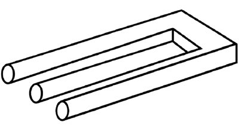
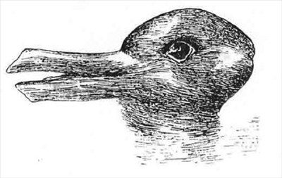
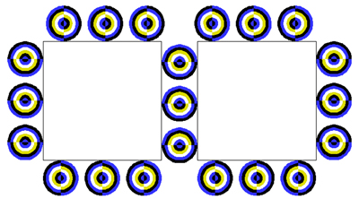
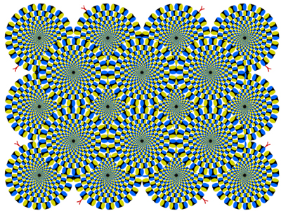

1000 DAYS OF THEORY
Delirious Screens
Flesh Shadows & Cool Technology
Ted Hiebert
Behind the screen, there is nothing. Not darkness, not fantasy, not even the flickering lights of consciousness aroused. And yet, within
the screen, the case is quite the opposite -- here, within the delirium of technological living we encounter an intensified imaginary, new worlds of
interactive possibility, in short, new opportunities for the falsification of being.
This provocation has strategic purpose, for the question of screen culture is less about the technological possibilities initiated by invention,
and much more about the delirious seduction of a life screened-in. Here, amidst the growing participatory potential of interactivity, the icy
prophecy of Marshall McLuhan's "cool technology" is brought to the cold light of the Lacanian mirror. For, as Lacan knew well, behind the mirror
there is also nothing, which is why it becomes so urgent to invent a fantastic something to which technological effect can be
attributed. The mirror, one might posit, is the first screen, the first "cool technology" -- the instance where the participatory performance of
living first takes on its split dynamic between the "hot" social and cultural self and its "cool" other.
The screen, however, also does something that the mirror never could -- namely, it allows for its fantasy to be realized, and not only in
potential. The very condition of screen-culture rests on a will-to-delirium implicit in the amplification of imaginative possibilities.
What follows is a series of three meditations on aspects of the screen as it relates to knowledge and technological living, three variations on a
theme, or three delusions of technological grandeur. Respectively, these contemplations will proceed from paradox, to illusion and, finally, to
hallucination as representative elements of a culture screened-in.
First Meditation: On Technological Paradox
There are images that are not images, or rather they are but the plurality is required. Images are worth a thousand words, it is said --
once -- a simple assertion of the limitations of meaningful language which must then always defer to the possibilities of the image. Always
paradoxical, if an image is worth a thousand words, should we not be able to articulate at least several of these? But what then of the
representative power of the image? A thousand representations mashed-up into the same pictorial space? Representation multiplied, breeding further
representations of their own, each fostering another conceptual image and a thousand more words in the process. It's a wonder that meaning was ever
invented to begin with. Screened in and screened out, and both at the same time.

Unknown Artist. Blivet, c. 1964.[1]
It seems all a little bit fantastic, of course. However, the material facts are not so simple in the end. We know already that there is no such
thing as pure, unfiltered, perception. Objective or not, technologically mediated or not, perception has as its default filter the perceptual
mechanisms of the body who perceives. And perception matters, for perception interrupted casts shadows no less than the light that makes perception
possible. The credible example of this is the wave/particle duality of light, as presented by quantum physics, wherein when measured for its particle
nature, light behaves as particle, but when the measuring tactics used are more conducive to wave behavior, waves are what we get.[2] Confusing, but -- ostensibly -- real.
This is not the only example however, and perhaps not even the best. For, such apparent paradoxes exist wherever we look -- a simple fact made not
so simple by the fact that our looking itself predilects one possibility or many; our own measurements dictate what can and will be measured. We look,
in other words, with a cast set of filters of our own. But which is the filter and how was it cast, and -- ultimately -- by whom?
Consider Jacques Lacan who insisted that the mirror stage of developing cognition will forever predispose a person's self-concept in a certain
direction. Since the time of that first childhood moment of recognition between the body and its reflection -- or misrecognition as Lacan also called
it -- an association is born, or, more properly, exactly the opposite of an association -- a disjunction.[3]
A primordial myth, the mirror stage is that which forever separates the questions of image and flesh and -- more importantly -- that which leaves flesh
itself accountable to the image, and most certainly not the other way around. It is not the task of the image to understand the body, but explicitly
the body who now remains bound to its own self-image. Here, under the sign of Lacan, we might well insist that life becomes the cast shadow of living
self-conception, flesh the cast shadow of the mirror encounter itself.
Now Lacan might have been wrong, but his insistences find correlatives well beyond the simple question of identity and self-image. Consider
Marshall McLuhan's well-known assertion that technology extends the body outside of itself, an extension of the central nervous system -- the very
tactile receptors of corporeal being.[4] It makes us nervous, of course, but that is partly the point,
since such corporeal extensions are by nature imperceptible for what they are. Not unlike the mirror stage, technological extension too separates the
body from its previously understood zones of comfort. And, one might even go as far as to call this an out of body experience of one sort or another;
bodies out of body -- the silvery technological umbilicus linking us always to and against ourselves, anchored or chained or suspended or enabled by
the very illusion of reflection itself.
It may seem strange to speak of the illusion of reflection, but since reflection is never quite itself it would make little sense to suggest a
plane of equivalence. Instead, perhaps it is precisely a plane of discord that is created, an impossible double that is neither doubled nor
impossible in the end. Instead, it is the always-misplaced identification that causes both the Lacanian subject and the McLuhanian extended body --
reflections, in the end, of one another or of nothing at all. And this is, of course, to insist that the Lacanian subject is, in fact, an instance of
realized McLuhanism. Consciousness, in its Lacanian iteration at least, is already technological -- symptom of the body already extended outside of
its own skin.
The formula works no less well when inverted however, as one would expect of a mirrored relationship such as this. For as McLuhan insists, the
consequence of sensory extension is also a numbing of other senses,[5] a relegation of the non-extended to
the status of mere physiological shadow, trailing behind the extended double at exactly the same distorted distance as the mirror itself would demand.
And while McLuhan does not acknowledge it as such directly, one might suggest that this extended dynamic of technological interaction is a function of
misrecognition no less than for Lacan.
Consider that the radio is not, as one might expect, simply an extension of the ear. The radio, instead, is a funneling of auditory stimulus that
limits what is perceptible at exactly the same time as it amplifies that which might not otherwise be heard. The radio is a screen, blocking
out the sounds of the immediate world by substituting its own simulacrum of auditory telepresence. And yet, at the same time, what the radio does in
fact extend is the voice -- and someone else's at that -- a teleportation device not for hearing but, ultimately, for speech itself. The radio
then, is perhaps better understood as an extension of the mouth.
But is this not the case for all technologies -- the simultaneous enabling and limitation of extended sensory media? Is not all technology in fact
screenal in structure, the mirror no less than the television no less than language itself? For we make a serious mistake if we forget that a screen
is not merely a portal into virtual space. Screens are also preventative devices, protecting one area from another, a semi-permeable sensory membrane
that is only ever as effective as its installation allows. The screen door enables the fantasy of domestic living, allowing for all the freshness of
the afternoon breeze while preventing the entry of bugs and birds and neighborhood pets. And yet, the screen door also keeps certain things inside --
a virtual barrier that is no less a barrier for its virtuality.
And this is why the question of reflection is central to the understanding of technology, not only because the mirror is the first screen, but also
because we -- as perceiving entities -- are already on the other side of the mirror, kept inside by the mirror-screen itself. The mirror allows for
conscious extension at the same time as it contains consciousness within its protective casing, yielding not the commonly misunderstood phenomenon of
symmetry, but instead a very real manifestation of corporeal paradoxicality. Behind the mirror there is nothing, and yet we are rarely taught to
engage with ourselves as that which is in front of the mirror. Instead, through Lacan, we must admit to a life on the inside, bound through our very
tools of perceptual engagement to the silvery frame of reflected living.[6] We are in no uncertain terms a
race of mirror people, bound self-reflexively to a world that is only ever as real as our fantasies of understanding allow. And, being mirror people,
we are also creatures of the screen -- virtually enabled as individuals rather than bodies -- the fantasy of appearance and understanding and
being rendered unaccountable to that which it takes as its source.
Here, extended outside of ourselves with our point of return denied, we also find that reality denied means possibility unleashed; an absence of
truth, an absence of grounding, and an absence of understanding form the basis from which the swirling myths of knowledge take form. And, it matters
little to the screen whether this knowledge is itself extendable or not, for the screen knows no Other. Instead, the screen is always already its own
Other, always contained within its own perspectival predilections -- here there is only the self-ignored, the self-forgotten, the self-unchosen. In
other words, the inverse side of the screen is always merely that which is in excess of the gaze itself, that which is illuminated but not seen, the
shadows of optical duality are no less invisible for their indisputable appearances. The doubled paradoxical dynamic of screenal living is both
sustained and censored by a necessary imperative for interactive engagement.
It has less to do with the dynamic of extension and much more to do with where we place ourselves within its matrix. For it is precisely this
perceptual self-placement that will determine the bias levied towards technological engagement -- the bias that will decide which fantasies to enable
in any given manifestation of appearance, as well as the bias which will determine which fantasies are to remain ignored, censored or disabled, as the
sustenance of technological engagement equally demands. For while one is perhaps always both within and outside of oneself in appropriately
paradoxical confusion, the resolution of confusion -- the very positing of understanding -- requires that a point of perspective be determined, a point
that will always compromise possibility for no singular point can understand itself as also a line without ceasing, in the process, to be a point.
Like wave/particle duality, this body/image paradox of technology requires a gaze to inform the very perspective from which its appearance is
manifest.
Returning, then, to the question of perception, appearance and duality, one might suggest that depending on how one looks, one perspective or
another will always, in some way, single itself out, despite the fact that the many possible perspectives are ultimately conceivable. Such is the
nature of paradox, of course, but the point remains that to understand the paradox does not make it go away. Where we end in such explorations is
with the proposition of irreconcilability concomitant with the necessity of perception itself. That one cannot see both at the same time does not
resolve the paradox of looking and seeing -- whichever face it is that one is presented with. Look differently and the resultant image will be
altered.
There is, of course, a name for phenomena such as this. They are called impossible representations, marked by the dual manifestation of a partial
perception, each of which appears complete. Such representations, given the form of imagery, are instanced by numerous optical representations in
forms such as the blivet as well as such famous examples as the Penrose staircase, the drawing of the old and young woman and Joseph Jastrow's
duck-rabbit,

Joseph Jastrow. Duck-Rabbit Ambiguous Image, 1899.[7]
With all such images there are of course several ways in which to perceive and understand. The duck-rabbit is both duck and rabbit, and yet one
only ever sees one at a time, each of which insists on the totality of its own comprehension, paradoxically, irreconcilably. To see both at once --
to perceive, in other words, the meta-model of such images -- is not to approximate a greater understanding of the drawing, but rather to merely miss
its specifics. The condition of seeing a duck is that one does not see a rabbit. The condition of seeing both is that one sees neither. The duck,
one might suggest, is best here described as a screened-out rabbit, and not simply as a duck at all.
But this is also not merely optical play, not a benign example of intellectual paradox, but a living instance of the shadows cast onto conception
itself. It is to say that perception changes the way the world appears, but also to say that such appearances change the nature of perception too,
change the conditions of knowledge and understanding and -- most clearly -- the perspectival self-placement of bodily orientation. It is to insist,
once again, that perception has effects and that which is not perceived is never quite as benign as we might wish.
And so we have the self as blivet, an impossible representation that is only impossible because the image itself is unliveable -- allowing
instead for multiple possibilities of living which must inevitably be sacrificed in the assumption of one daily face or another. And in the
assumption of a face comes too the discarding of other faces, face to face to face, both worn and erased, cast into the shadows of unacknowledged
presence. We are, in this instance, the lived manifestation of image to the power of -n, the walking shadows of that which the mirror fails to
reflect.
Second Meditation: On Technological Illusion
Manifest exclusions are only one side of the technological divide. The other side however, is not a side at all, a front without a back, a
screen with nothing behind it. Behind the screen there is nothing, so there can be no deceit. Yet, sometimes, that which is screened-in has no
observable cause, or rather the cause is immanently observable, but for no good reason. Not what we expected, nor what we chose, and yet shadows
rotate and reality expands on its own. Some things are only as real as they seem, and yet for others this seeming is itself a reality unbounded from
the rules of the game. Hyper real, perhaps, but the emphasis must be on the hyper, the tantrum of extraneous energy, extraneous data, a thousand
words plus one, yet in that one we find the hammer that breaks the illusion by seducing us into agreement. Illusion-become-real is the sign of
paradox resolved.

Akiyoshi Kitaoka. Convection, 2003.[8]
It must be reiterated that what we are discussing is not a question of understanding or simple knowledge. This is a question of appearances, and
also a question of effect, and the main point that must be repeated is that perception does not simply change the way in which an object or concept or
phenomena appears, it actually changes what that phenomena is. Perception transforms its object, and in so doing, transforms itself. And there is
much at stake in such a framework, for this question of perceptual paradoxicality would seem to imply that there is no such thing as passive
perception, except perhaps that which refuses to give itself credit for being shaped by the world around it.
But this is important, for if there is no passive perception, then there is no passive technology either. There is, consequently, only risk and
return -- a perspectival gamble that is also always a technological transformation. It makes sense, of course, to suggest that perception no less than
technology has as its condition a corporeal extension. Eyes do not see themselves, but only ever that which is outside the body; for ears and noses
and mouths and hands the same is always the case. Perception extends the body outside of itself, revealing the myth of corporeal integrity for the
self-deluded falsity it always was. Yet the simultaneity of paradoxical interaction presents an inverse side to this dynamic as well. As the eyes
extend perception into the world, so too does the world literally invade and penetrate the body through perceptual orifice. And what this means, seen
technologically, is that interaction and interactivity are always only one side of the equation. It is, in the end, perhaps not as simple as McLuhan
suggested with his participatory delineation of "hot" and "cool" technologies -- technologies that prevent and/or foster and/or even require human
interaction in order to ensure their smooth functionality.[9]
If we return momentarily to quantum physics we may begin to make this appropriately unclear. Remember in particular that, according to
Heisenberg's Uncertainty Principal, one cannot accurately measure for both position and velocity at any given moment in time.[10] Such is the nature of paradox, that it can only ever be understood in its partial manifestations.
Velocity is the cast shadow of position measured, and vice versa. And yet, as we know, shadows do not always behave as they are supposed to, as the
dictates of uncertainty theory would paradoxically demand. For, if we are to stand by what has been suggested so far, it would seem required that we
look to other ways of looking -- hunting duck-rabbits, so to speak, for the explicit purpose of animating the shadow puppets of reality understood
otherwise. And, if the consequence of knowledge revealed is a cast shadow of knowledge denied, then even uncertainty should have effects on our
perceptual understandings.
Screened out and screened in, and both at the same time. This is the paradox, hidden by the illusion of technological simulacra. And yet the
simulacra is no illusion at all, not at least in an optical sense. Instead, what we are faced with here is precisely a material illusion --
optics or knowledge or information turned flesh. Technology, in this sense, is a symptom of paradox, and paradox is itself a symptom of
illusion: a manifest censoring of the meta-real is the condition for the existence of both bodies and shadows.
If this seems tenuous, consider a singular, but integral, difference between the mirror and the screen -- namely, that the screen is capable of
representing the world around it with greater accuracy than the mirror. We believe the mirror, for the analogue does not lie. Yet if it were
to lie, it is doubtful that it would tell us so. This is the paradox of reality, and it is what reveals the illusion of analogue living. For the
mirror always gets things exactly backwards, a failing that technology mimics but is not bound by. Popular webcam software, for instance, upholds
this illusion, reversing our faces from left to right unless we tell it differently. Yet, for the most part, this nuance goes unnoticed for the
simple reason that the distorted image is much more real to us than the accurate possibility that might replace it. We prefer the inaccuracy of the
analogue to the representative potential of the digital.
But what might it indicate that it is not technology that distorts that which we might otherwise call real? What might it mean that reality in
fact takes liberties with its own self-image, to such an extent that we believe the distortion over the accurate rendering? We might once have
thought that a mirror interaction was participatory -- a cool technology -- until we realize that what we take as real reflection is instead infecting
us with a delirious falsity. Suddenly cool is not so cool. The mirror grows hot, yet at the same time the possibilities for living expand
accordingly -- bodies extend and expand into the gaseous nebulae of fantasy proposed. It is, in the most direct of ways, a process of sublimation:
matter transformed into gas under the influence of heat.[11] And, in many ways this extension is not
merely a change of state -- it is a psycho-geographic extension that is dimensional in effect. A psychic extension of possibilities: value-added --
reality to the power of n+1.
That this reality is not really a reality is, of course, only as important as the designation of reality and illusion in the first instance. This
n+1 reality is, of course, in actually fact a fantasy, an illusion of the real that is taken up as simulacrum. And yet, whether embraced or
dismissed, encounters such as this have lasting consequences and effects. From the other side of the mirror, such sublimation is easily constituted
as a reality to the power of 1-n, here sacrificing the non-reflective world for the sake of extended psycho-geographic participation. There is, in
other words, an inverse side to this value-added, namely also a value subtracted, an equivalent yet opposing sublimation from hot to cool, from the
airy freedom of a non-reflective world to the hardened casing of the screen itself.
reality to the power of 1-n = fantasy to the power of n+1
The argument, of course, is reflective; both sides of the debate are represented in a fully paradoxical rendering. Yet this again is an instance
where to represent both sides is to miss the particularities of each, to miss -- that is -- the missing or added realities and illusions of engaged
technological appearance. That it begins with the attribution of participatory or non-participatory technology is only to say that there is little
chance of non participatory worlds, particularly when each representation of reality is already itself grown of illusion. Like the body extended,
technologies are always hot and cool at the same time, value added and value subtracted, fantasy proposed and fantasy distracted -- casting shadows of
the fallen real or the awakened imaginary as the case might be.
For this is the technological illusion, the value added illusion that is also easily seen as value pre-empted. Both at the same time. With the
invention of fantasy comes the possibility of confusing the real for its double; with the invention of the mirror comes the possibility of reflection,
with both its positive and negative influences.[12] But the real problematic here is the conflation of
realities. It is not a problem that the illusion is mistaken as real. In fact, this has become the condition for our cultural survival. What,
instead, is the problem is when the unreal is dismissed for its failure to integrate into such illusions, when the illusion of the real begins to
sensor the imaginary itself.
And what is at stake here is not to be confused, for it matters not one bit whether one sees the value added or subtracted sides of the equation.
This is not the proposal of a political debate about whether ducks are a more accurate representation of reality than rabbits. This is, instead, a
question of technological enabling, either as fiction or as reality, as the case might be. This is to ask after our own willingness to engage, but
also about the purpose and consequences of such engagement. Ultimately, this is a question of illusion, and a question of whether we are bothered
about the illusory nature of nature itself. We might put on technologically corrective lenses, seeking in this instance to rectify the natural
illusions upon which our foundations of the real are based, or we might embrace the delirious powers of the real revealed as, in the end, not quite so
real after all. We have been fooled by our own eyes, the material illusion of technological living.
Now, despite the principles of uncertainty which were used to ground this paradoxical formulation, it would seem in fact that the illusion of
technology breaks the rules of uncertainty; not by allowing for measurement of both position and velocity, but instead proposing one through the
other, giving either space or movement where there is none -- or rather, where there was none before. Not a perceptual mistake, nor an instance where
we have been duped and fooled and led astray by the screen machine, this is instead another value-added moment which is also of course an artificial
limitation of the world around. Perpetual motion, optically realized -- two dimensions yield the perception of three.

Akiyoshi Kitaoka. Rotating Snakes, 2003.[13]
To make this clear, these images are, notably, static -- not animations -- illusions, but not built on deceit. A still image that moves, defying the
rules of what we thought we knew anyways, throwing reality itself into the animated paradox of movement where there is none. And yet, the image is
cool: when I move my eyes the image changes speed, changes direction, changes intensity. And yet, the image is hot: deceitful and misleading in ever
fascinating ways. One may wish to call this image an optical illusion, but the vertigo it causes matters. For the body responding in such ways, this
is material illusion, value added reality, the hot residue of cool interaction. It is in instances like this where flesh shadows are born.
Where is it that paradox becomes illusion and then illusion becomes an hallucinatory real of its own? Where, and when and how and why and why
not and when not and how not too. Appropriately reflective; appropriately not. Is the mirror one-way or two, or why not three as well? A three-way
mirror for an imaginary mind in free-range captivity. If we can see it anyway then which way remains? n+1-1=n right? Well, yes but also well, no, not
quite. If it all reverted back to the start, then the beginning and the end might be mistaken for the same, but when there is a process, inevitably,
there are also processed remains.
Third Meditation: On Technological Hallucination
When do images stop speaking their thousand-word tongues and start hitting or kissing or other such fun? When -- to speak up -- does the image
turn flesh, on its own or at least with delirious effect? Light-through eyes see light-through worlds, one would assume. And yet the light through is
a function of, at least, an impact of one sort or another. Another sorted fantasy realized, distorted too but realized no less for such distortion.
Is it the illusion that distorts or might it not be an already distorted reference frame that skews the perspective remains? Real illusions...
enlightenment interrupted... the screen goes delirious... and shadows turn to flesh.
Artist Unknown. Natural Hallucinogen, 2006.[14]
In some ways, it is likely already clear where these confusions are leading. That the real is grounded in illusion and paradox means only that
there is no real fiction or fantasy that is, on those grounds alone, dismissible. It is not enough to call something unreal in order to disqualify
its reality, since in the end, each is merely a manifest instance of the same. Impossible manifestations and manifest impossibility. Still images
that move, or that change faces right before our eyes, changed mirror faces with partial packet-truths and value-added lies of their own.
The question that remains however, is the same as that with which we began: a question of perspective. Confronting this world of screens, it makes
no difference whether we find ourselves on the inside or the outside. The only mistake, perhaps, is to assume that we must -- or can -- choose sides,
choose one double-side over the other; side with the single, the double or the persistency of shadow.
But there are options and there are no options at all. Not simply the creation of movement out of nothing, but the moving of bodies and minds as
well. It is no surprise that technological engagement undermines the certainty principles of the world we live in, providing manifest examples of the
imaginary in action, extending certain strains of fantasy -- straining the limits of the real itself -- in ways that perhaps only the virtual could.
But when technology begins to defy the principles of uncertainty, well that is where things begin to get both complicated and -- ultimately --
extremely simple. Again, of course, both at the same time.
It is this defiance of uncertainty that grounds the screen, that shapes and twists its invisible horizon, and in such shaping twists us around too.
For vertigo is not merely a physiological reaction to heights or distortions of distance and space. Instead, vertigo is the manifest illusion of
space getting ever closer, of still shapes in motion, of uncertainty denied. One might distrust one's eyes, but it is not the eye to which
vertigo is accountable. Not an extension of the eye, but of the belly -- a virtual free fall of prosthetic nausea that can be so crippling because,
despite the immediacy of its effect, there is no cause we can justifiably call real.
And again, there is a seeming difference that is the result of the illusions and paradoxes of such encounter. Are we to call vertigo a hot or a
cool encounter? It is imposed, but in no real way -- in no way, in other words, whose reality might be verifiably asserted. Its reality, instead, is
purely participatory, value-added, sustained by the perceptual penetration of illusion itself. What begins as imaginary is sustained by its
effect, becoming all-too-real in the very most immediate of senses. And even the attribution of unreality is of little consolation to the body
caught in the sublimating web of illusion turned flesh.
This is not technology as an extension of the body -- not anymore. Instead, under the signs of extreme participation, under the signs of effect,
the relationship is exactly inverted. Here it is the body that is most clearly an extension of technology itself, and we have the lingering after
effects to prove it. Some would call this technological possession, others technological disabling, still others a strange form of utopia realized.[15] However, what each of these perspectives has in common is a constitution of a technological imaginary,
whether it be one of fantasies or of nightmares is, perhaps, of only secondary importance. And yet, this secondary importance is also where the
cooling potential of participatory engagement most clearly lies. For if the relationship has reversed itself, if in fact it is the body that is an
extension of technology, then it is also the lingering effects of technological interaction that no longer constitute the materiality of living, but
instead are the explicit manifestations of living shadow, cast as actors but also as consequences.
This is not simply the ingestion of light, nor a passive participation with pre-fabricated fantasies encountered and then abandoned for the next
cool fashion wave of interactive possibility. This instead, is a case of cast matter caused by a value added imaginary itself. And it makes
sense, in the end, for the casting of shadows requires this n+1 imaginary and the fact that we have 2-dimensional shadows of our own is no argument
against the 3-dimensional shadow plays we are nevertheless compelled to act out. Unintelligible effect is the sign of shadows in play, whether the
impossible movement of optical inertia or the paradoxical flip-book imaginary of visual interpretation. Our 2-D shadows have no difficulty growing to
several times life-size, appearing and disappearing for as long as there is light in the room. The case is not distinct for our own interactions --
the defiance of static reality is not a willed or progressive development; it is simply a newly observed effect of life as it was anyways.
We are flesh shadows -- no longer simply a function of an incontestable real. Instead, a screened-in persona is explicitly a manifestation
of a censored meta-real, a cast shadow of imaginative possibility that becomes as real as we ourselves allow through an equally intensified
relationship to interpretive, interactive living. This is a revival of the centuries-old principle of suspended disbelief, not this time on a safely
detached cognitive plane, but in a shifting nebulous sublimated sphere. Not the suspension of disbelief in what Samuel Taylor Colleridge called the
"moment of poetic faith," but in the very ongoing task of daily living -- suspended disbelief in the materialization of imaginary being itself.[16]
And while the screen is symptomatic of this articulated delirium, it is not the cause. It is, rather, an instance of cause, one among possible
many -- the screen has simply revealed the simulacra called reality that before now never had quite so many options to choose from. We have always
been shadows, whether those of social conditioning or of cast typologies of being, whether we have been overshadowed by mirror-grown conscience or by
the will to individuation makes little difference. The difference now however, is that for perhaps the first time the simulacra has begun to breed,
multiplying and in this generational proliferation value-adding imaginary possibilities of its own. We still live in the shadows, but we have been
freed from our responsibility to remain real, the only condition of which is our manifest ability to sustain the unrealities that nevertheless
surround and inform and deform our daily existence.
This is a natural hallucination, quixotic in the very best and worst of senses. And yet, this is not a return to the much tauted consensual
hallucination of yesteryears, for there has never been anything consensual about the hallucinatory. Participation is demanded, not requested, and
failure to participate simply means the disappointment of unactivated effect. It simply means an hallucination of a different sort. The rhetorical
question reveals the paradox, the illusion and the impossibility of the situation: how would one ever know that one was hallucinating? The moment of
realization would inevitably mean the death of the hallucination, or the hallucinatory transformed, from duck to rabbit, from still to moving, from
vertiginous living to the domestic safety of a more familiar screen.
This is not mind over matter, but imagination over reality, the infected matter of extended living casts material illusions of its own. With
natural hallucination, the paradox and the illusion literally enter into the body. If, faced with the question of paradox, one is tempted to
reconcile meta-differences into a unified model, this becomes impossible when faced with illusion. Yet, with illusion, the effect is immediate,
sustained externally only for the duration of engagement. When these effects begin to linger, that is when the hallucinatory begins its play.
And so, in the end, we are left simply with hallucinations, and hallucinations of hallucinations, that which can never be constituted for the
simple fact that we cannot properly know that we are hallucinating. Uncertainty defied -- delirious screens are the simulacral residue of an always
already delirious life. The world has grown much cooler, multiple sublimations, hot delusions with cool effects, plasticine flesh that bends and
morphs and reconstitutes another sense of itself in the process. Screens do not merely engage fantasy, but over-ride the real itself, incanting the
technological imaginary in the process, a shadow spell whose consequence is shadow play to the power always of n+1. Hallucination is not merely value
added reality but also that which points to the possibility that reality itself is simply a value-subtracted state of fantasy. We are not simply
trapped inside the screen; it is reality itself that is trapped on the outside. Delirious screens, enlightenment interrupted, multiplied, again
uncertainty denied, and again anything and its double share the paradoxical space of both at the same time. The illusion is complete but the delusion
is only just beginning.
Notes
---------------
[1] Unknown Artist. Blivet, c. 1964. This drawing goes by many names, including "Impossible
Fork," "Shuster's Conundrum," or the "Devil's fok." See Donald Simanek, "The Principles of Artistic Illusions." Available online at http://www.lhup.edu/~dsimanek/3d/illus1.htm (Accessed April 22, 2008).
[2] See Philip Carr, "Getting Started with Quantum." Available online at http://www.canadaconnects.ca/quantumphysics/10050/1074 (Accessed April 22, 2008).
[3] Jacques Lacan, "The Mirror Stage as Formative of the Function of the I as Revealed in
Psychoanalytic Experience," in A. Ellitt, ed. The Blackwell Reader in Contemporary Social Theory, Oxford: Blackwell, 1999, p. 62.
[4] Marshall McLuhan, Understanding Media: The Extensions of Man, New York: McGraw-Hill, 1964,
p. 19.
[5] McLuhan, p. 51.
[6] In Lacan's cosmology, consciousness itself is created through the mirror-encounter, after which we
can never understand ourselves as unmediated entities. The result of this is, contentiously, that we ourselves are "located" on the inside of
the mirror - forever alienated from the flesh that wears us.
[7] Joseph Jastrow. Duck-Rabbit Ambiguous Image, 1899. For more information see John F.
Kihlstrom, "Joseph Jastrow and His Duck - Or Is It a Rabbit?" Available online at http://socrates.berkeley.edu/~kihlstrm/JastrowDuck.htm (Accessed April 22, 2008).
[8] Akiyoshi Kitaoka. Convection, 2003. Available online at http://www.ritsumei.ac.jp/~akitaoka (Accessed April 22, 2008).
[9] To simplify McLuhan's formulation, "cool" technologies are those that are more conducive to
interactivity, while the experience of "hot" technology is more passive in structure. See McLuhan, p. 36-44.
[10] See The Stanford Encyclopedia of Philosophy, "The Uncertainty Principle." Available online at:
http://plato.stanford.edu/entries/qt-uncertainty (Accessed April 22, 2008).
[11] See About.com: Physics, "Sublimation." Available online at: http://physics.about.com/od/glossary/g/sublimation.htm (Accessed April 22, 2008).
[12] This is the logic through which Paul Virilio declared that "every technology carries its own
negativity [its accident], which is invented at the same time as technical progress." This, consequently, might be seen as the accident of
understanding - technologically realized and consequently risking material presence for the sake of enlightened observation proper - a risk that may
or may not prove useful. See Virlio, Politics of the Very Worst: An Interview with Philippe Petit. Sylvère Lotringer, ed., Michael
Cavaliere, trans., New York: Semiotext(e), 1999, p. 89.
[13] Akiyoshi Kitaoka. Rotating Snakes, 2003. Available online at http://www.ritsumei.ac.jp/~akitaoka (Accessed April 22, 2008).
[14] Artist Unknown. Natural Hallucinogen, 2006. Available online at: http://www.dailymotion.com/video/x2t6ps_natural-hallucination_shortfilms (Accessed April 22, 2008).
[15] See, for instance: Arthur Kroker, The Possessed Individual: Technology and the French
Postmodern, New York: St. Martin's Press, 1992; Paul Virilio, Politics of the Very Worst: An Interview with Philippe Petit. Sylvère
Lotringer, ed., Michael Cavaliere, trans., New York: Semiotext(e), 1999; Roy Ascott, Telematic Embrace: visionary theories of art, technology and
consciousness, E.Shanken, ed., Berkeley: University of California Press, 2003.
[16] Samuel Taylor Coleridge, Biographia Literaria, J. Shawcross, ed., Oxford: Claredon Press,
1907, chapter xiv.
--------------------
Ted Hiebert is a Canadian visual artist and theorist. His artworks have been shown across Canada in public galleries and
artist-run centres, and in group exhibitions internationally. His theoretical writings have appeared in The Psychoanalytic Review, Technoetic Arts and
Performance Research, among others. Hiebert is a Postdoctoral Research Fellow at the Pacific Centre for
Technology and Culture at the University of Victoria and is currently working on a book-length project concerning theory, perception and the imagination. www.tedhiebert.net
© CTheory. All Rights Reserved